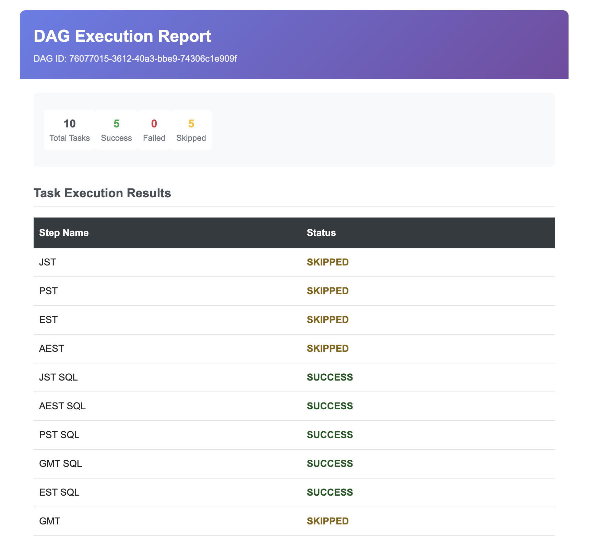
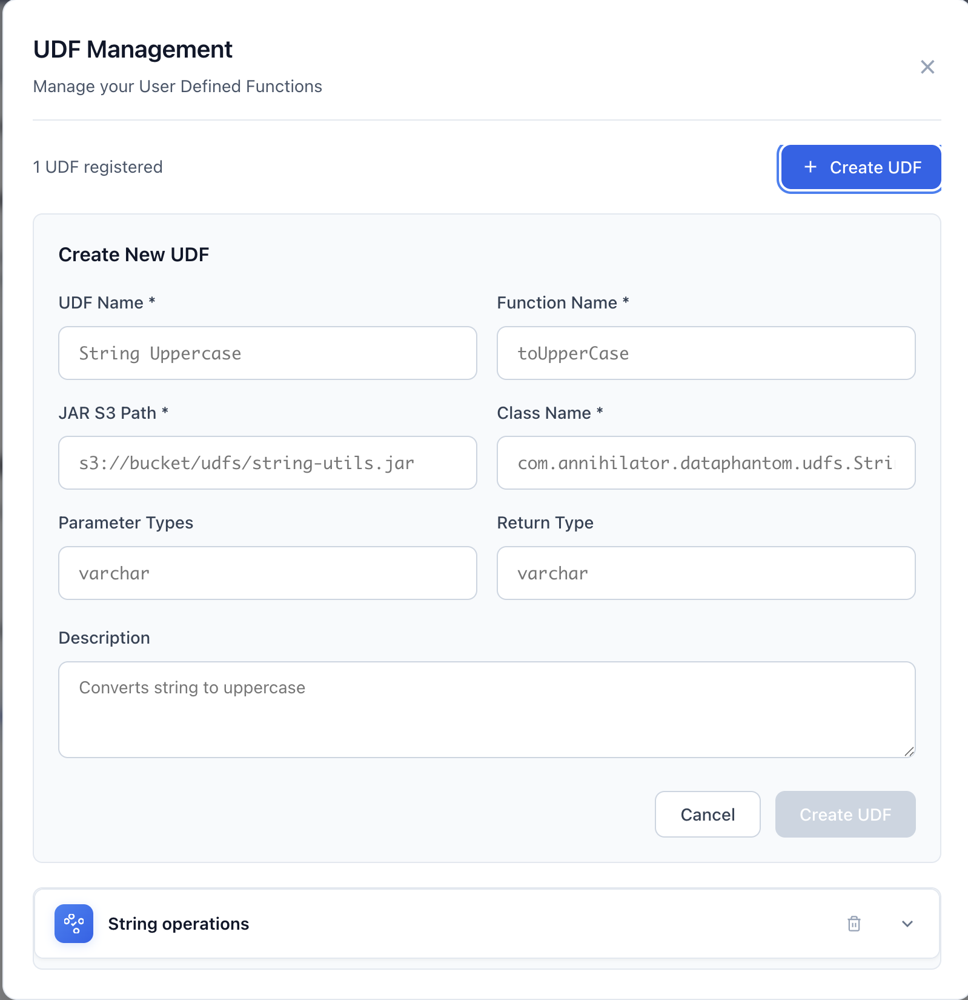

STEP 1
Login to Data Phantom
Access the Data Phantom dashboard by logging in with your credentials. If you're a new user, click on "Create an account" to register.
Login Page: Enter your email and password to access the dashboard. New users can click "Create an account" to register.
Quick Tip: Make sure your backend is running on port 9092 and you've configured your database connection in config-dev.yml.
STEP 2
Explore the Dashboard
After logging in, you'll see the main dashboard with two key sections:
- UDF Library: Manage your User-Defined Functions
- Workspace: Create and manage playgrounds (data processing workflows)
Empty Dashboard: When you first log in, you'll see "No playgrounds yet" - ready to create your first workflow!
STEP 3
Create Your First Playground
A playground is a container for related data processing tasks. Click the + button in the workspace sidebar to create one.
Create Playground: Enter a name and optionally a cron expression for scheduled execution. Leave the cron field empty for manual execution only.
Cron Expressions: Use standard cron format (e.g., 0 0 * * * for daily at midnight) or Quartz format. Leave empty for ad-hoc execution only.
STEP 4
View Your Playground
Once created, your playground appears in the sidebar and opens in the main panel. You'll see the Task Management interface with several tabs:
- Tasks: Create and manage SQL tasks
- Reconciliation: Set up data validation between tasks
- Graph: Visualize task dependencies
- Run History: Track execution history
- Notifications: Configure email alerts
New Playground: Shows "No Tasks Found" with a prompt to create your first task. The playground status shows as "IDLE" with "Never ran".
STEP 5
Create Your First Task
Tasks are individual SQL operations that process data. Click "Create Task" to add a new task.
Create Task Form: Enter task name, select type (Hive, Presto, Spark SQL, etc.), write your SQL query, and optionally set a parent task for dependencies.
Task Types Supported:
- Hive: For data warehousing queries
- Presto: For interactive analytics
- Spark SQL: For distributed SQL processing
- PySpark: For Python-based Spark jobs
- MySQL: For direct database queries
Using UDFs: When creating a task, you'll see a list of registered UDFs on the side. Use the UDF method in your query and select the UDF that applies. You can select multiple UDFs for a single task to leverage custom functions in your queries.
STEP 6
View Your Tasks
After creating tasks, they appear in the task list with their type, status, and parent relationships.
Task List: Shows the created task with status "UNKNOWN" (not yet executed). You can run, view, edit, or delete tasks using the action buttons.
Running Tasks: Use "Run All Tasks" to execute the entire workflow, or "Select & Run" to run specific tasks while respecting dependencies.
STEP 7
Visualize Your DAG
Click the "Graph" tab to see a visual representation of your task dependencies.
DAG Graph: Interactive visualization showing task flow from top to bottom. Each node displays task type and status. Use zoom controls to navigate large workflows.
Graph Controls: Use the controls on the left to zoom in/out, fit to screen, or download the graph as an image.
STEP 8
Track Execution History
The "Run History" tab shows all past executions with duration charts and per-task status.
Run History: Bar chart shows execution duration for each run. Color-coded grid shows success/failure status for each task in each run (Green = Success, Red = Failed, Gray = Skipped).
Performance Monitoring: Use the duration chart to identify performance trends and spot anomalies. The task grid helps you quickly identify which tasks fail most frequently.
STEP 9
Set Up Email Notifications
Configure email subscribers to receive execution reports via AWS SES.
Email Notifications: Add email addresses to receive notifications when the playground executes. Configure AWS SES settings in your config-dev.yml file.
# Configure AWS SES in config-dev.yml
# ============================================
# AWS SES Configuration for Notifications
# ============================================
notification:
aws_ses:
access_key: your-access-key
secret_key: your-secret-key
from: noreply@yourdomain.com
to: admin@yourdomain.com
STEP 10
Receive Execution Reports
Subscribers receive detailed HTML email reports after each playground execution, showing task results and reconciliation metrics.

Email Report: Shows DAG ID, execution summary (total/success/failed/skipped), individual task results, and reconciliation metrics with data comparison details.
STEP 11
Set Up Data Reconciliation
Validate data consistency between tasks using reconciliation mappings.
Reconciliation Mappings: List of configured reconciliations showing task pairs, number of mapped fields, and status. Click "Create New Mapping" to add more.
Reconciliation Algorithms:
- Files < 1MB: Exact matching (100% accurate)
- Files > 1MB: Probabilistic matching using Bloom filters (memory efficient)
STEP 12
Create Reconciliation Mapping
Select source and target tasks to compare their outputs, then define which columns to compare between them.
Reconciliation Mapping: Choose the two tasks you want to reconcile and map their corresponding fields. The source task provides the left dataset, the target provides the right dataset. You can map fields with different names (e.g., "emp_id" in source to "employee_id" in target).
Field Mapping: Use the search boxes to quickly find fields in large datasets. The system will compare these mapped fields when reconciliation runs automatically after both tasks complete.
STEP 13
Manage User-Defined Functions
Create and manage UDFs (User-Defined Functions) that can be reused across your tasks in queries.

UDF Library: Create, edit, and manage custom functions for Hive and Presto. UDFs let you encapsulate reusable logic that can be called from any task's SQL query.
UDF Benefits: User-Defined Functions allow you to write custom business logic once and reuse it across multiple tasks, improving code maintainability and consistency.
Congratulations!
You've completed the quick start guide and learned how to:
- Log in and navigate the dashboard
- Create playgrounds and tasks
- Build workflows with task dependencies
- Visualize your DAG
- Monitor execution history
- Set up email notifications
- Configure data reconciliation
What's Next?
Configuration Guide
Learn about advanced configuration options
View Config
Need Help?
If you encounter any issues or have questions: